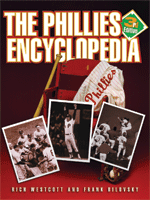

<body bgcolor="#FFFFFF" text="#000000" link="#0000FF" vlink="#CC0000" alink="#CC0000"><center><hr width="350" size="1" align="center" noshade>A new book for a new ballpark<hr width="350" size="1" align="center" noshade><p><a href="https://cdcshoppingcart.uchicago.edu/Cart/ChicagoBook.aspx?ISBN=9781592130153&&PRESS=temple" target="_top">Buy this book!</a> | <a href="https://cdcshoppingcart.uchicago.edu/Cart/Cart.aspx?PRESS=temple" target="_top">View Cart</a> | <a href="https://cdcshoppingcart.uchicago.edu/Cart/Cart.aspx?PRESS=temple" target="_top">Check Out</a></p><p></p></center><!--none//--><h1>The Phillies Encyclopedia</h1>
<H2>Third Edition</H2>
<H2><!-- Foreword by Harry Kalas --></H2>
<h3>Rich Westcott and Frank Bilovsky, foreword by Harry Kalas</h3>
<P>cloth 1-59213-015-1 $55.95, Mar 04, <FONT COLOR=#990033>Out of Stock Unavailable</FONT>
<BR> 696 pp
9x12
695&nbsp;halftones 16&nbsp;color&nbsp;illustrations
</P><BLOCKQUOTE><I>"What a way to bring in 2004! With state-of-the-art Citizens Bank Park and </i>The Phillies Encyclopedia<i>,
Rich Westcott and Frank Bilovsky have captured the 121 years of Phillies baseball history with painstaking research, hundreds of interviews, and a love and devotion of the Fightin' Phils and baseball."</i>
<br>&#151<b>Harry Kalas</b>, from the Foreword<i></I></BLOCKQUOTE>
<p>The benchmark volume for any fan wanting to know all the facts about baseball's oldest continuous one-city, one-name team is back in a new edition. To help commemorate the Phillies move to a new ballpark in 2004, authors Rich Westcott and Frank Bilovsky have updated and expanded this indispensable work for the first time since 1993. The authors have revised existing player biographies and stats, and added profiles of new Phillies. Seventy-five new photos and a 16-page color insert bring the total number of illustrations to an amazing 600-plus. And longtime Phils' broadcaster Harry Kalas has contributed a new Foreword for the occasion.
<p><i>The Phillies Encyclopedia</i>,Third Edition, will recall all the highs and the lows of one of America's most storied baseball teams to oldtimers and a new generation of fans alike. From Baker Bowl days to Citizens Bank Park, from Chuck Klein to Jim Thome, it's over a century of baseball in a single book.
<p>New features include:
<ul><li><p>Over seventy new photographs
<li><p>Updated biographies of every Phillies Hall-of-Famer
<li><p>Updated stats on every player through the end of the 2003 season
<li><p>11 new seasons added
<li><p>Almost every chapter updated with new information on team history
<li><p>New player profiles</ul>
<BR>&nbsp;<h2>Excerpt</h2><P>Excerpt available at <a href="http://www.temple.edu/tempress">www.temple.edu/tempress</a></p>
<BR>&nbsp;<h2>Reviews</h2>
<p>Praise for previous editions of <i>The Phillies Encyclopedia</i>:
<p><i>"All baseball fans, especially Phillies fans, should read this </i>Phillies Encyclopedia<i>. It is, without a doubt, the most comprehensive and best-researched history of Phillies baseball ever written. Frank Bilovsky and Rich Westcott are to be commended for writing what was obviously a labor of love. I have been associated with the Phillies organization as a player and broadcaster for 45 years. I loved the book. And I know you will love it also."</i>
<br>&#151<b>the late Richie Ashburn</b>
<p><i>"The authors have every right to use the word 'encyclopedia'...for the breadth of information contained herein is tremendous. The book doesn't provide stats on hot dog and souvenir sales at Veterans Stadium but that's about all that's left out....A fantastic feast for Philly fans!"</i>
<br>&#151<b><i>Spitball Magazine</i></b>
<p><i>"</i>The New Phillies Encyclopedia<i> is the finest and most complete book about any team in sports. The pictures are excellent. This book is a must for any real baseball fan."</i>
<br>&#151<b>Allen Lewis</b>, former <i>Philadelphia Inquirer</i> sportswriter and member of the writer's wing of the Baseball Hall of Fame
<p>New Reviews:
<p><i>"At 5.5 pounds and 667 pages, it's a veritable trough of Phillies information...contain[ing] just about any team fact imaginable."</i>
<br>&#151<b><i>The Philadelphia City Paper</i></b>
<p><i>"... filled with fascinating anecdotes."</i>
<br>&#151<b><i>Philadelphia Inquirer</i></b>
<p><i>"[I]nvaluable...the book has it all...a delightful companion for anyone with even a passing interest in baseball and the Phillies."</i>
<br>&#151<b><i>The Chestnut Hill Local</i></b>
<p><i>"For a diehard Phillies fan, </i>The Phillies Encyclopedia<i> is a treasure trove of information and a welcome addition to a baseball library."</i>
<br>&#151<b><i>Golden Times</i></b>
<p><i>"[T]his work offers much more fascinating, in-depth, team-related information. For the third time, </i>The Phillies Encyclopedia<i> is affectionately well done and should be an essential purchase in the Philadelphia region."</i>
<br>&#151<b><i>36th Volume of the American Reference Books Annual</i></b>
<BR>&nbsp;<h2>Contents</h2><P>
<p>Foreword &#150 Harry Kalas
<br>Introduction
<br>1. Down Through the Seasons
<br>2. Player Profiles
<br>3. All the Teams' Men
<br>4. The Strategists
<br>5. The Front Office
<br>6. The Ballparks
<br>7. The Hall of Famers
<br>8. Great Moments
<br>9. The Postseason
<br>10. The Golden Era
<br>11. Off the Wall
<br>12. Trades, Acquisitions, and Sales
<br>13. Milestones, Honors, and Other Facts
<br>Sources, Photo Credits,
<br>Acknowledgments
<br>About the Authors
</P><BR>&nbsp;<H2>About the Author(s)</H2>
<table><tr><td valign="top"><img src="/tempress/authors/987_au1.gif" height="90" width="75"></td><td width="100%" valign="middle"><p><b>Rich Westcott</b> is a writer and sports historian and a veteran of more than 40 years as a working journalist. He is a leading authority on the Phillies, and for 14 years was editor and publisher of Phillies Report. A native Philadelphian, he is the author of 18 other books, including <I><a href="1818_reg.html" target="_top">Veterans Stadium</a></i>, <I><a href="1273_reg.html" target="_top">Philadelphia's Old Ballparks</a></i>, <i><a href="987_reg.html" target="_top">The Phillies Encyclopedia</a></i> (with Frank Bilovsky), and <I><a href="1533_reg.html" target="_top">A Century of Philadelphia Sports</a></i>. Westcott has seen or covered all the major teams in Philadelphia, including the Warriors and 76ers.</P></td></tr></table><P><b>Frank Bilovsky</b>, business writer for the <i>Rochester Democrat and Chronicle</i>, is a former sportswriter and columnist for the <i>Philadelphia Bulletin</i>. He is also the author of <i>Lion Country: Inside Penn State Football</i>.</P>
<BR><H2>Subject Categories</H2>
<p><A HREF="/tempress/sports.html" TARGET="_top">Sports</a>
<BR><A HREF="/tempress/philly.html" TARGET="_top">Philadelphia Region</a>
<BR><A HREF="/tempress/general.html" TARGET="_top">General Interest</a>
</p>
<p align="center"><a href="https://cdcshoppingcart.uchicago.edu/Cart/ChicagoBook.aspx?ISBN=9781592130153&&PRESS=temple" target="_top">Buy this book!</a> | <a href="https://cdcshoppingcart.uchicago.edu/Cart/Cart.aspx?PRESS=temple" target="_top">View Cart</a> | <a href="https://cdcshoppingcart.uchicago.edu/Cart/Cart.aspx?PRESS=temple" target="_top">Check Out</a></p><p><font face="Arial" size="1"><a href="copyright.html" onMouseOver="window.status='Web Copyright Policy';return true;" onMouseOut="window.status=''" title="Web Copyright Policy">&copy;</a> 2015 <a href="http://www.temple.edu" target="new" onMouseOver="window.status='Link to Temple University home page';return true;" onMouseOut="window.status=''" title="Link to Temple University home page">Temple University</a>. All Rights Reserved. http://www.temple.edu/tempress/titles/987_reg.html</font></p>